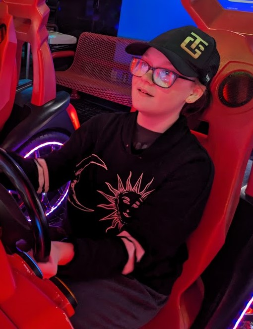

Emersyn is the youngest of her four siblings, two from her mother and two from her father. She was born on a warm day in Omaha in July 2012. She grew up going to a few different houses in Plattsmouth and Omaha (just like her two older sisters on her father's side; that's me!)She is a bright little girl in my clubs at school who loves all the nerdy stuff her family loves, like Sherlock, Doctor Who, musicals, dogs, and so much more. Emersyn likes to join her dad in watching mystery movies in theaters when she can. She spends lots of her time drawing on her tablet and watching YouTube. However, she never shows her family the drawings she creates. She loves watching GMM and Daily Dose of Internet. She also watches car crash videos with her father and loves to learn about road rules and who was in the wrong. She likes to play video games, and you can catch her spending hours on the Sims 4, but not the gameplay, just the creating a sim where she loves to create stories and different characters for her world before abandoning them for another the next day. She is a hot-headed little girl in middle school, so her emotions are even more significant than ever (this is biased as it's coming from her older sister, who has to deal with her anger all the time.) Emersyn loves her family dogs, Remy and Roo, and spends all the time she can with them and all the other family dogs.